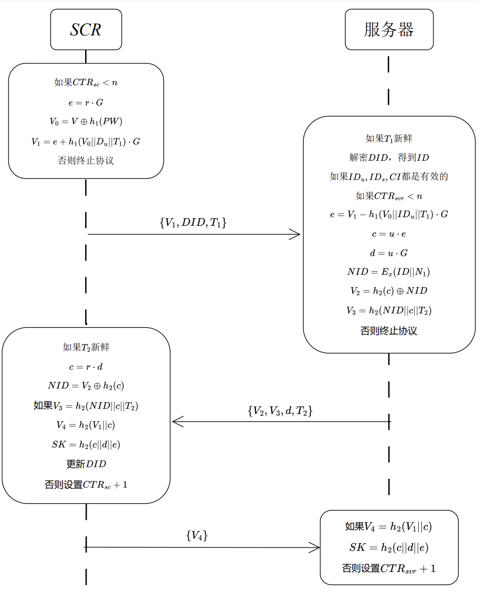
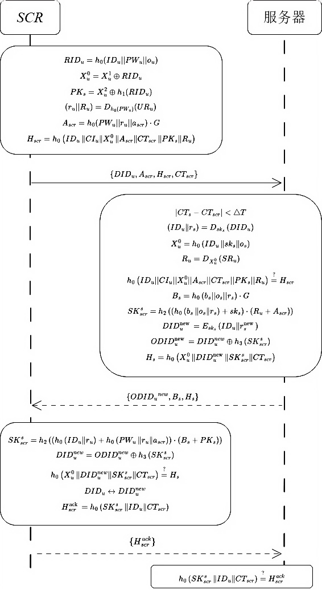

sequenceDiagram
participant User/SCR
participant Server
User/SCR ->> Server: Request Registration
Server -->> User/SCR: Initialize Smart Card (SC)
User/SCR ->> Server: Complete Smart Card (SC)
Security Analysis of an Identity-Based Key Agreement Protocol
1. Introduction
This is a summary of my undergraduate final project, which is about the security analysis of identity-based key agreement protocol. And the summary will be in several parts.
2. Background
In 1981, Lamport Lamport (1981) proposed a password-based authentication scheme, where the server stores passwords. This scheme is vulnerable to passive attacks, as once the password table is leaked or compromised, the intruder can modify the passwords stored in the system. Later, Hwang et al. T. Hwang, Chen, and Laih (1990) proposed an improved protocol that overcame the weaknesses of Lamport’s scheme. Subsequently, Yang and Shieh Yang and Shieh (1999) introduced two password authentication schemes using smart cards based on timestamps and nonces. In 2000, Hwang et al. M.-S. Hwang and Li (2000) proposed an advanced remote user authentication scheme based on ElGamal’s public key system. Many smart card-based authentication schemes have been proposed for single-server environments. The main drawbacks of single-server schemes lie in maintaining the verification table and protecting user IDs and passwords.1
Authentication and key agreement protocols, as core technologies of communication security, play a pivotal role. They build an impregnable security barrier for users over risky channels, ensuring smooth verification of identities and secure transmission of messages. These protocols not only serve as the foundation of encrypted communication but also enable multiple users to communicate securely through adversary-controlled, unencrypted channels while generating a public session key to ensure the security of communication over public networks.
These protocols act as the cornerstone of encrypted communication and provide a way for multiple users to communicate securely even through unencrypted channels controlled by adversaries (Weidong 2009).
2.1. Symbol Explanation
Table: Explanation of Common Cryptographic Symbols
| Symbol | Explanation |
|---|---|
|| |
Represents string concatenation, meaning that two or more strings are concatenated from left to right. |
| \(\oplus\) | Represents the bitwise XOR (exclusive OR) operation. It operates on two binary numbers (or bits): if the corresponding bits are the same, the result is 0; if they are different, the result is 1. |
Discrete Logarithm Problem (DLP)
Given a finite cyclic group $G = g $ and an element \(a \in G\), the discrete logarithm problem is to find an integer \(x\) (where \(0 \leq x \leq |G|\)) such that \[ g^x = a \] .
ECC The Elliptic Curve Cryptosystem (ECC) is a type of public-key cryptography based on the mathematics of elliptic curves. It leverages the difficulty of solving the discrete logarithm problem on elliptic curves to achieve functions such as data encryption, decryption, and digital signatures. The primary advantage of ECC is that it provides comparable or even higher levels of security with smaller key sizes compared to other methods (such as the RSA encryption algorithm). This means that for the same level of security, ECC requires fewer computational resources and less storage space.
Hash Function Hash function can convert inputs of arbitrary lengths into fixed-length outputs, achieving a many-to-one mapping. For a given hash function, \(Hash\), and any fingerprint, \(c\), it is nearly impossible to find an input, \(m\), such that \(Hash(m) = c\). This means that while it is easy to convert an input value into its corresponding output, it is extremely difficult to do the reverse.
3. Conclusion
3.1 Security Threats
- Cannot resist offline password guessing attacks
- Ignored the difference between session non-visible identifiers and system visible identifiers
- Salt values directly stored on the user’s smart card
4. Images
Here are two sequence diagrams:


5. Video
Here is a video related to the topic:
References
Hwang, Min-Shiang, and Li-Hua Li. 2000. “A New Remote User Authentication Scheme Using Smart Cards.” IEEE Transactions on Consumer Electronics 46 (1): 28–30.
Hwang, Tzonelih, Yihwa Chen, and Chi Jung Laih. 1990. “Non-Interactive Password Authentications Without Password Tables.” In IEEE TENCON’90: 1990 IEEE Region 10 Conference on Computer and Communication Systems. Conference Proceedings, 429–431 vol.1.
Lamport, Leslie. 1981. “Password Authentication with Insecure Communication.” Communications of The ACM 24: 770–72.
Weidong, Qiu. 2009. Fundamentals of Cryptographic Protocols. Higher Education Press.
Yang, Wen-Her, and Shiuh-Pyng Shieh. 1999. “Password Authentication Schemes with Smart Cards.” Computers & Security 18 (8): 727–33.
Footnotes
put forward by several scientists including Wen-Shenq Juang, Chin-Chen Chang and Jung-San Lee↩︎